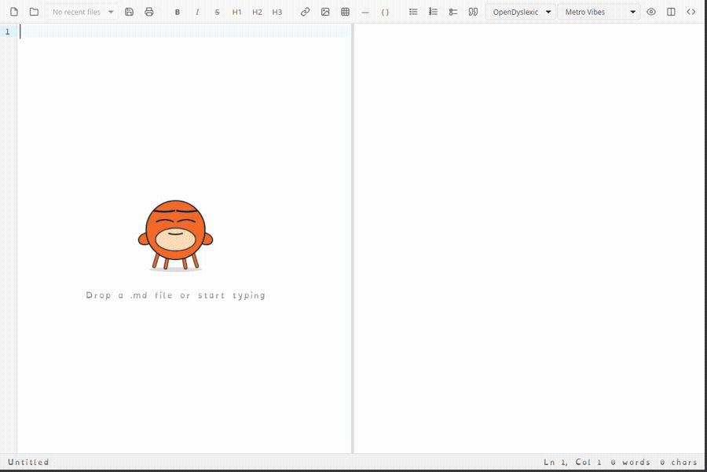

● Screen-reader engine
Typing into a Markdown editor
A short script types Maxwell's equations into MarkTheCrab through the editor it found by name, and bad-ass-mcp records the window while it works.
Real runs on real machines. Each clip says how bad-ass-mcp knew what to click, because that's the whole point.

A short script types Maxwell's equations into MarkTheCrab through the editor it found by name, and bad-ass-mcp records the window while it works.
Games don't describe their buttons, so there's nothing to read. Claude looked at a screenshot, matched the wire colours, and dragged each one across with bad-ass-mcp's drag. The fallback, not the default.
BAM replaying MarkTheCrab's six smoke tests with no AI in the loop, pointer visible and paced so you can follow it, ending on the report.
Editing game data in a large Windows modding tool: dialogs, lists and context menus, all by name.